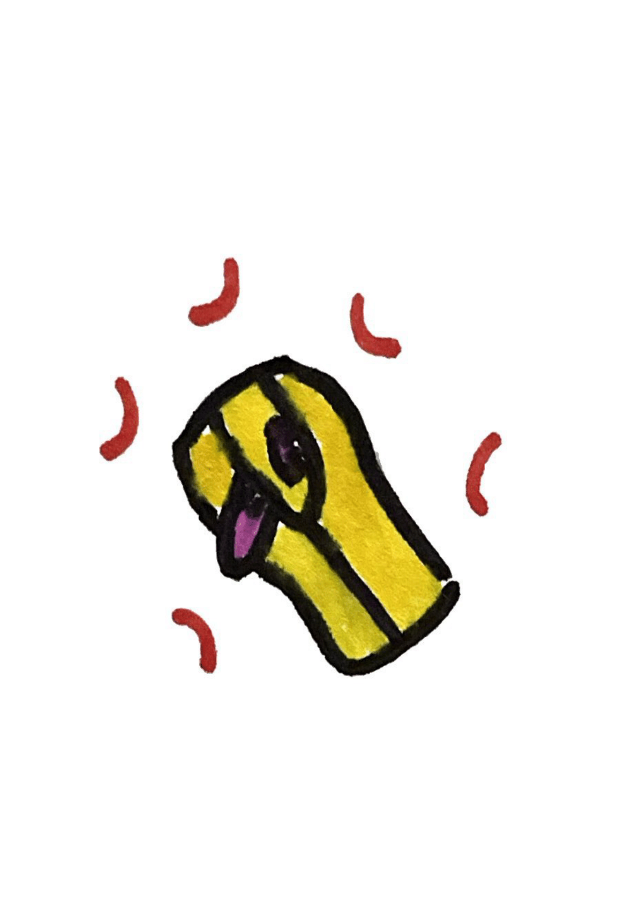

The Dining Dead: Desserts
Beating Brainy Delight

Pure cooked medulla coated in a yellow sugar. If you're lucky, you may even get a beating one!
Wernickes Wacky Word Wafer
A simple, squishy, green wafer presented on top of a spongy Wernicke's area.
Perception Pie
Homemade pie made using parts from a fresh occipital lobe. Eating it can improve eyesight.